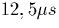
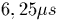
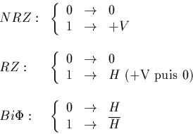
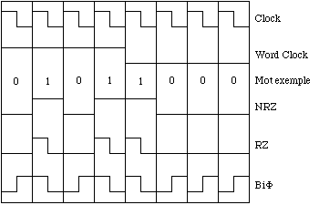

Le codeur numrique fabrique un signal lectrique reprsentant chacun des
bits. Aussi, comme le rcepteur doit pouvoir retrouver dans le signal
numrique la cadence d'mission des bits et s'accorder dessus, c'est
prcisment le rle du codeur de faire apparatre cette frquence dite
d'horloge (qui vaut bien entendu 80kHz dans notre cas).
Sur le botier, diffrents codes sont proposs, parmi lesquels le NRZ (Non
Return to Zero), le RZ (Return to Zero) et le Bi (Biphase).
(Biphase).
Pour le NRZ, on transmet un palier de hauteur nulle pendant une priode d'horloge (donc pendant

) pour signifier le bit 0; le palier de hauteur +V (par exemple V=5 V) correspond, lui, au bit 1.Au niveau du RZ, la correspondance est juste modifie pour le bit 1: on transmet, pour signifier ce bit, le signal d'horloge H (en fait, +V pendant

puis 0 pendant les restantes).
Enfin, pour le Bi , pour signifier le bit 1 on transmet le signal
d'horloge H, et pour le bit 0 le complmentaire de H (+V pendant
puis 0 pendant les restantes).
, pour signifier le bit 1 on transmet le signal
d'horloge H, et pour le bit 0 le complmentaire de H (+V pendant
puis 0 pendant les restantes).
En rsum, cela donne:

En clair, puisqu'un schma vaut toujours mieux qu'un long discours, la figure 3.3 rsume ces diffrents codages.
